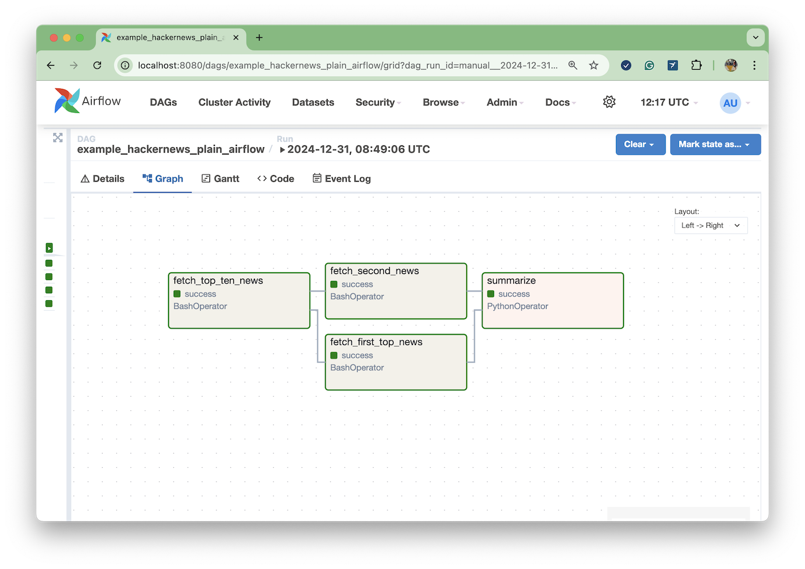
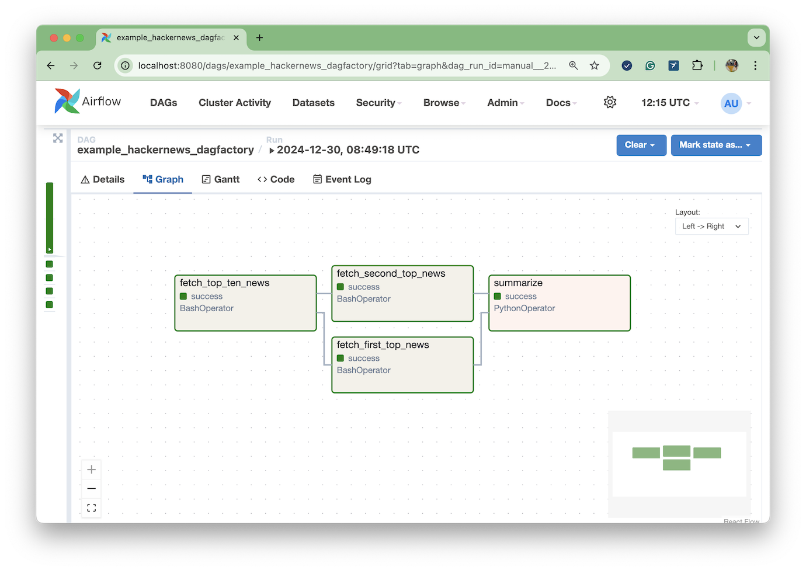
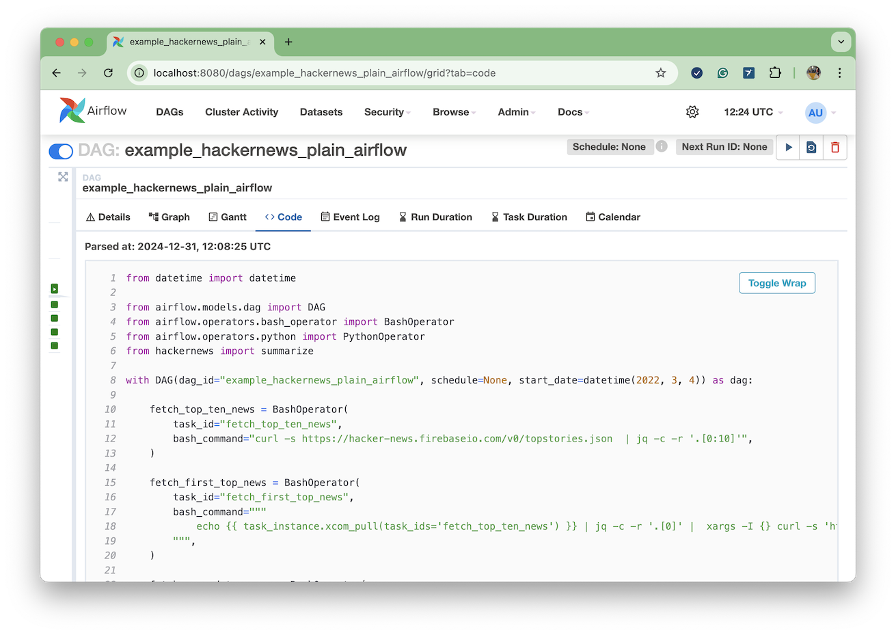
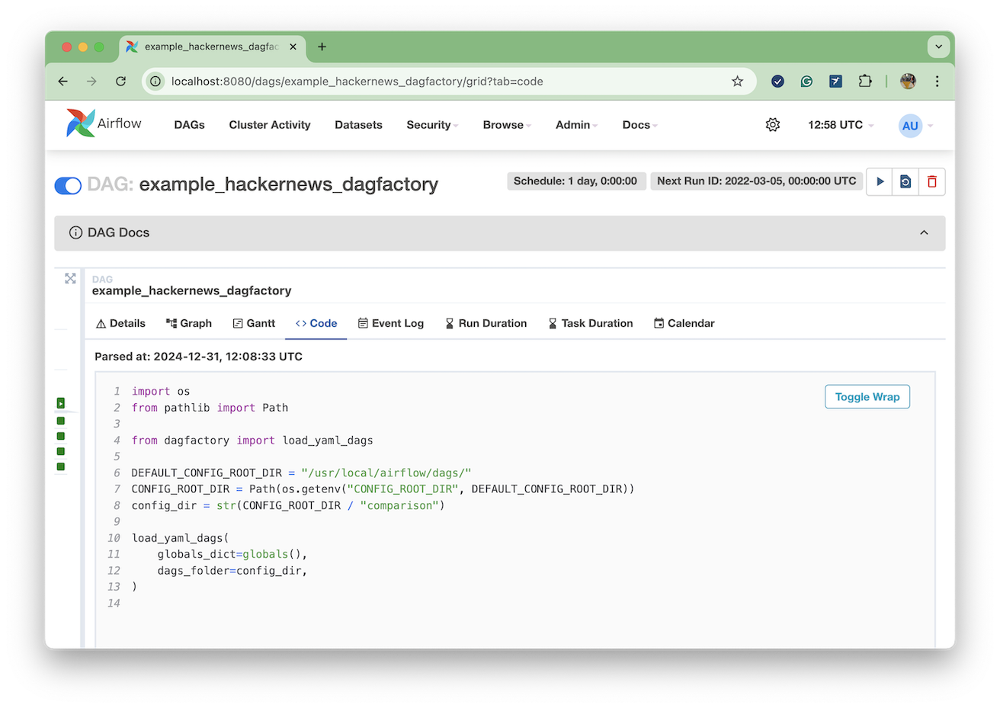
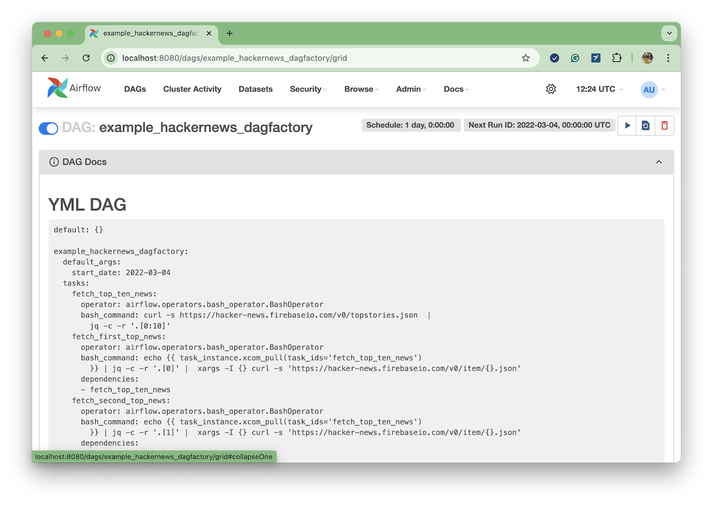

Traditional Operators: Using YAML instead of Python
Traditionally, operators are Airflow's building blocks, and while they are robust and diverse, they can sometimes lead to boilerplate-heavy DAGs compared to the newer TaskFlow API.
Most of the Airflow providers come with built-in traditional operators. Some examples include BashOperator, PythonOperator, KubernetesPodOperator, and PostgresOperator.
Below, we illustrate how to represent an Airflow DAG using traditional operators and how to define the same DAG using DAG Factory. Ultimately, both implementations use the same Airflow operators. The main difference is the language used to declare the workflow: one uses Python and the other uses YAML.
Goal
Let's say we'd like to create a workflow that performs the following:
- Retrieve the top ten stories from Hacker News using the Hacker News API.
- Fetch the details for the two top stories using the Hacker News API.
- Summarize the selected stories as Markdown, using Python.
We will implement the first two steps using BashOperator and the third step using PythonOperator.
The last task will generate a Markdown snippet similar to:
| title | url |
|:----------------------------------------------------------------------------|:-----------------------------------------------------------------------------------------------------------------------|
| I keep turning my Google Sheets into phone-friendly webapps | https://arstechnica.com/gadgets/2024/12/making-tiny-no-code-webapps-out-of-spreadsheets-is-a-weirdly-fulfilling-hobby/ |
| Coconut by Meta AI – Better LLM Reasoning with Chain of Continuous Thought? | https://aipapersacademy.com/chain-of-continuous-thought/ |
The main logic is implemented as plain Python functions in hacker_news.py:
def summarize(**kwargs):
"""
Given the Airflow context is provided to this function, it will extract the XCom hackernews records from its
upstream tasks and summarise in Markdown.
"""
ti = kwargs["ti"]
upstream_task_ids = ti.task.upstream_task_ids # Get upstream task IDs dynamically
values = [json.loads(ti.xcom_pull(task_ids=task_id)) for task_id in upstream_task_ids]
df = pd.DataFrame(values)
selected_columns = ["title", "url"]
df = df[selected_columns]
markdown_output = df.to_markdown(index=False)
print(markdown_output)
return markdown_output
Implementation
As a reference, the following workflows run using Airflow 2.10.2 and DAG Factory 0.21.0.
Plain Airflow Python DAG
from datetime import datetime
from airflow.models.dag import DAG
from airflow.operators.bash_operator import BashOperator
from airflow.operators.python import PythonOperator
from hacker_news import summarize
with DAG(dag_id="example_hackernews_plain_airflow", schedule=None, start_date=datetime(2022, 3, 4)) as dag:
fetch_top_ten_news = BashOperator(
task_id="fetch_top_ten_news",
bash_command="curl -s https://hacker-news.firebaseio.com/v0/topstories.json | jq -c -r '.[0:10]'",
)
fetch_first_top_news = BashOperator(
task_id="fetch_first_top_news",
bash_command="""
echo {{ task_instance.xcom_pull(task_ids='fetch_top_ten_news') }} | jq -c -r '.[0]' | xargs -I {} curl -s 'https://hacker-news.firebaseio.com/v0/item/{}.json'
""",
)
fetch_second_top_news = BashOperator(
task_id="fetch_second_news",
bash_command="""
echo {{ task_instance.xcom_pull(task_ids='fetch_top_ten_news') }} | jq -c -r '.[1]' | xargs -I {} curl -s 'https://hacker-news.firebaseio.com/v0/item/{}.json'
""",
)
summarize = PythonOperator(task_id="summarize", python_callable=summarize)
fetch_top_ten_news >> [fetch_first_top_news, fetch_second_top_news] >> summarize
Alternative DAG Factory YAML
example_hackernews_dagfactory:
default_args:
start_date: 2022-03-04
tasks:
fetch_top_ten_news:
operator: airflow.operators.bash_operator.BashOperator
bash_command: "curl -s https://hacker-news.firebaseio.com/v0/topstories.json | jq -c -r '.[0:10]'"
fetch_first_top_news:
operator: airflow.operators.bash_operator.BashOperator
bash_command: "echo {{ task_instance.xcom_pull(task_ids='fetch_top_ten_news') }} | jq -c -r '.[0]' | xargs -I {} curl -s 'https://hacker-news.firebaseio.com/v0/item/{}.json'"
dependencies: [fetch_top_ten_news]
fetch_second_top_news:
operator: airflow.operators.bash_operator.BashOperator
bash_command: "echo {{ task_instance.xcom_pull(task_ids='fetch_top_ten_news') }} | jq -c -r '.[1]' | xargs -I {} curl -s 'https://hacker-news.firebaseio.com/v0/item/{}.json'"
dependencies: [fetch_top_ten_news]
summarize:
operator: airflow.operators.python.PythonOperator
python_callable: hacker_news.summarize
dependencies: [fetch_first_top_news, fetch_second_top_news]
Comparison
Goal
Both implementations accomplish the same goal and result in the expected Markdown table.
Airflow Graph view
As shown in the screenshots below, both the DAG created using Python with standard Airflow and the DAG created using YAML and DAG Factory look identical, from a graph topology perspective, and also from the underlining operators being used.
Graph view: Plain Airflow Python DAG

Graph view: Alternative DAG Factory YAML

Airflow Code view
From an Airflow UI perspective, the content displayed in the "Code" view is the main difference between the two implementations. While Airflow renders the original Python DAG, as expected, in the case of the YAML DAGs, Airflow displays the Python file that references the DAG Factory YAML files:
import os
from pathlib import Path
from dagfactory import load_yaml_dags
DEFAULT_CONFIG_ROOT_DIR = "/usr/local/airflow/dags/"
CONFIG_ROOT_DIR = Path(os.getenv("CONFIG_ROOT_DIR", DEFAULT_CONFIG_ROOT_DIR))
config_dir = str(CONFIG_ROOT_DIR / "comparison")
load_yaml_dags(
globals_dict=globals(),
dags_folder=config_dir,
)
Code view: Plain Airflow Python DAG

Code view: Alternative DAG Factory YAML

To overcome this limitation, DAG Factory appends the YAML content to the DAG Documentation so users can better troubleshoot the DAG:
